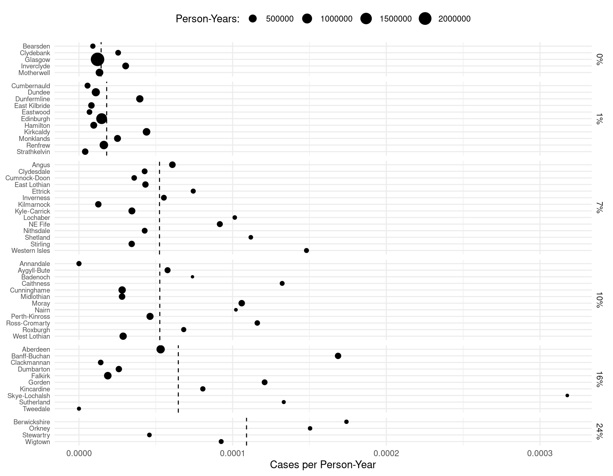
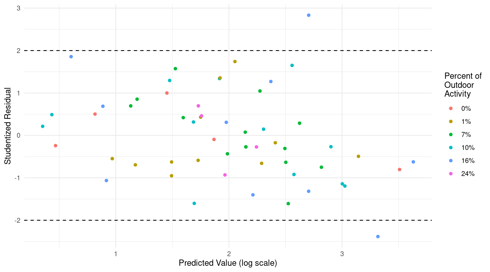
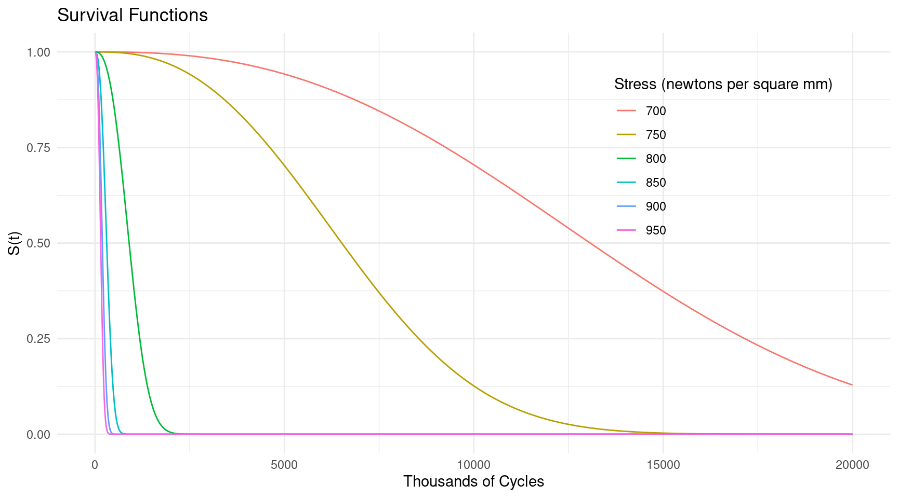
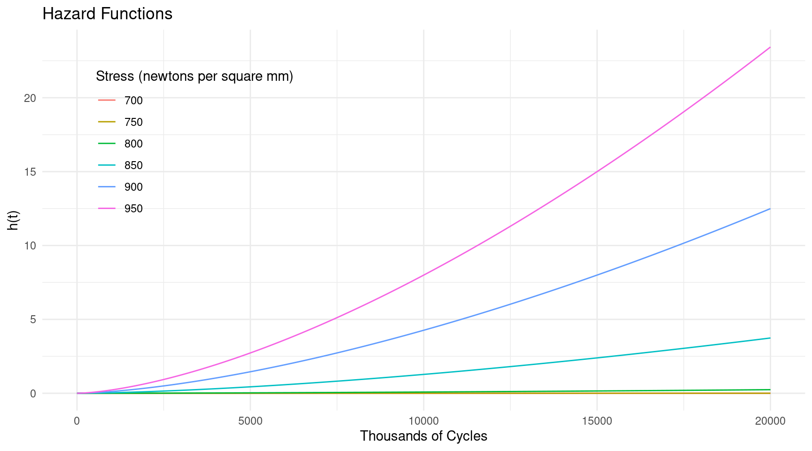
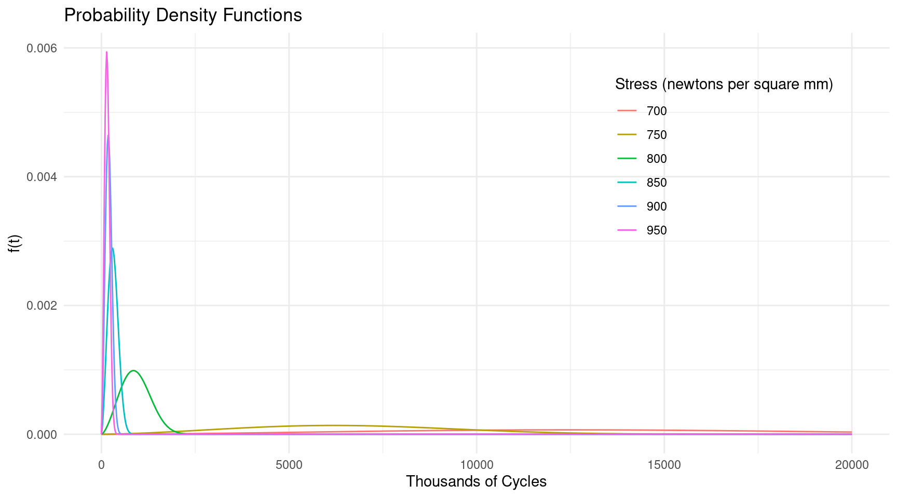
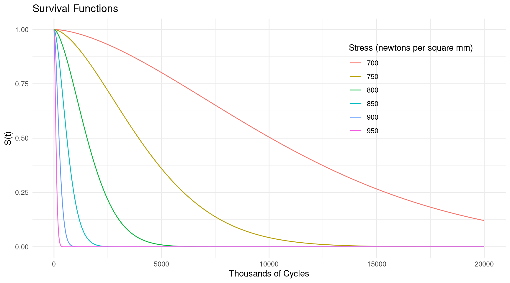
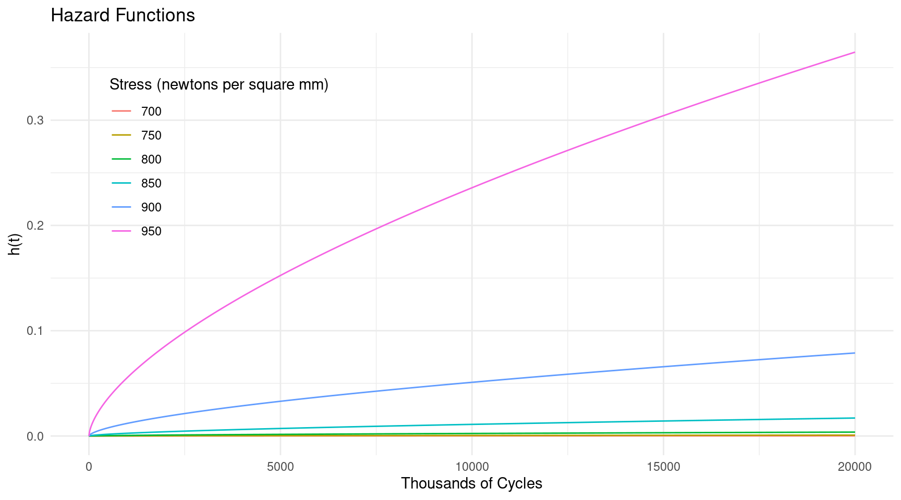
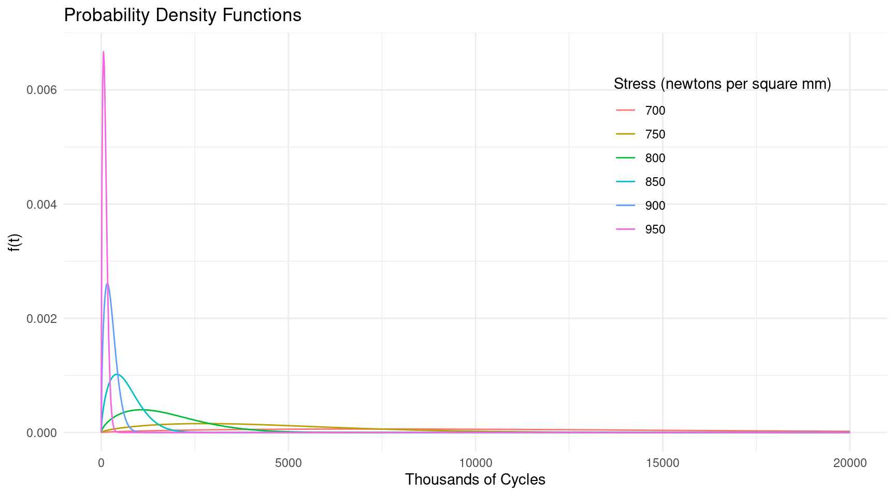

Over-Dispersion, Marginal Effects, the Delta Method, and Survival Analysis
Statistics 516, Homework 4 (Solutions)
You can also download a PDF copy of this homework assignment.
Lip Cancer in Scotland: Over-dispersion
Recall the model for the lip cancer data from Scotland used in the previous homework. Here is the model and a plot of the raw data with the estimated rate of lip cancer per person-year by percent of the population engaged in outdoor activity.
library(epiR)
library(dplyr)
library(ggplot2)
data(epi.SClip)
lipcancer <- epi.SClip %>%
mutate(district = factor(district, levels = rev(sort(unique(district))))) %>%
mutate(percent = paste(prop.ag, "%", sep = "")) %>%
mutate(percent = reorder(percent, prop.ag)) %>%
select(district, cases, population, percent)
m <- glm(cases ~ offset(log(population)) + percent, family = poisson, data = lipcancer)
d <- data.frame(percent = sort(unique(lipcancer$percent)), population = 1)
d$yhat <- predict(m, newdata = d, type = "response")
p <- ggplot(lipcancer, aes(y = district, x = cases/population)) +
theme_minimal() + geom_point(aes(size = population)) +
facet_grid(percent ~ ., scales = "free_y", space = "free_y") +
labs(y = NULL, x = "Cases per Person-Year", size = "Person-Years:") +
scale_x_continuous(labels = scales::label_number()) +
theme(axis.text.y = element_text(size = 7), legend.position = "top") +
geom_vline(aes(xintercept = yhat), data = d, linetype = 2)
plot(p) This model does not account for variation in the lip cancer rate over districts other than that accounted for by the percent of the population engaged in outdoor activity (i.e., two districts with the same or approximately the same percent of the population engaged in outdoor activity may differ in other ways leading to differences in the lip cancer rate). Failing to account for this could lead to over-dispersion, which you will investigate in this problem.
Create an appropriate residual plot to detect over-dispersion, and examine the residual deviance and degrees of freedom for the Poisson regression model. Explain whether or not you see evidence of over-dispersion and why.
Solution: Here is my residual plot using studentized residuals (but the standardized Pearson or deviance residuals would also work).
lipcancer$yhat <- predict(m) lipcancer$residual <- rstudent(m) p <- ggplot(lipcancer, aes(x = yhat, y = residual, color = percent)) + theme_minimal() + geom_point() + geom_hline(yintercept = c(-2, 2), linetype = 2) + labs(x = "Predicted Value (log scale)", y = "Studentized Residual", color = "Percent of\nOutdoor\nActivity") plot(p) This is fancier than is necessary. Something simple like
This is fancier than is necessary. Something simple like
plot(predict(m), rstudent(m))would suffice. But in any case we can see that a bit more than 5% of the residuals are outside the (-2, 2) interval. Also if you look at the output ofsummaryyou might note that the residual deviance is 223.95 is more than four times larger than the residual degrees of freedom is 50. These results suggest some over-dispersion.Estimate the model specified above using quasi-likelihood by using the argument
family = quasipoisson. This will assume a variance structure of \(\text{Var}(Y_i) = \phi E(Y_i)\) rather than \(\text{Var}(Y_i) = E(Y_i)\) as is assumed when using maximum likelihood with an assumed Poisson distribution for the observed count. Report the parameter estimates and their standard errors using thesummaryfunction. Compare these to the estimates and standard errors obtained previously and briefly discuss what has or has not changed. Finally create an appropriate residual plot and briefly explain if you think the over-dispersion has been successfully resolved and why based on that plot.1Solution: We can estimate this model using quasi-likelihood as follows.
m.quasi <- glm(cases ~ offset(log(population)) + percent, family = quasipoisson, data = lipcancer) summary(m.quasi)$coefficientsEstimate Std. Error t value Pr(>|t|) (Intercept) -11.1471 0.3230 -34.5134 1.539e-36 percent1% 0.2239 0.4040 0.5542 5.819e-01 percent7% 1.2909 0.3795 3.4011 1.328e-03 percent10% 1.2944 0.3822 3.3870 1.384e-03 percent16% 1.5005 0.3783 3.9663 2.330e-04 percent24% 2.0233 0.5321 3.8023 3.908e-04Here are the parameter estimates and standard errors when not using quasi-likelihood.
summary(m)$coefficientsEstimate Std. Error z value Pr(>|z|) (Intercept) -11.1471 0.1443 -77.229 0.000e+00 percent1% 0.2239 0.1805 1.240 2.149e-01 percent7% 1.2909 0.1696 7.610 2.732e-14 percent10% 1.2944 0.1708 7.579 3.481e-14 percent16% 1.5005 0.1691 8.875 6.983e-19 percent24% 2.0233 0.2378 8.508 1.764e-17The point estimates are the same, but the standard errors are larger when using quasi-likelihood. Failing to account for over-dispersion can lead to underestimates standard errors. It is important to note that quasi-likelihood can change the point estimates as well. It depends on what variance structure we specify, and the model itself. For example, if there was a “megaphone” pattern and we used
family = quasi(link = "log", variance = "mu^2")which assumes that \(\text{Var}(Y_i) = \phi E(Y_i)^2\), then the point estimates would not have been the same.Here is the residual plot we get after using quasi-likelihood (same code as before).
lipcancer$yhat <- predict(m.quasi) lipcancer$residual <- rstudent(m.quasi) p <- ggplot(lipcancer, aes(x = yhat, y = residual, color = percent)) + theme_minimal() + geom_point() + geom_hline(yintercept = c(-2, 2), linetype = 2) + labs(x = "Predicted Value (log scale)", y = "Studentized Residual", color = "Percent of\nOutdoor\nActivity") plot(p) This is an improvement. Relatively few residuals are outside (-2, 2). Also there is no strange shape to the residuals so we do not need to consider alternative variance structures.
In the last homework assignment you were asked to make inferences by estimating the expected number of cases of lip cancer per 100K (i.e., 100,000) person-years, and also the rate ratios comparing the rate of lip cancer at 1%, 7%, 10%, 16%, and 24% versus 0% of the population involved in outdoor activity. Do this again but based on the model you estimated earlier using quasi-likelihood (you do not need to provide interpretations of the rate ratios this time, just report them). Use either
contrastor functions from the emmeans package so that you are also provided with confidence intervals for all of your inferences. Compare these estimates and the associated confidence intervals to what was obtained in the last homework when you did not account for any (potential) over-dispersion, and briefly discuss what has and has not changed.Solution: I am going to use the emmeans package here. First I will estimate the lip cancer rate per 100,000 person-years.
library(emmeans) emmeans(m, ~percent, type = "response", offset = log(100000))percent rate SE df asymp.LCL asymp.UCL 0% 1.44 0.208 Inf 1.09 1.91 1% 1.80 0.196 Inf 1.46 2.23 7% 5.24 0.467 Inf 4.40 6.24 10% 5.26 0.480 Inf 4.40 6.29 16% 6.46 0.569 Inf 5.44 7.68 24% 10.90 2.061 Inf 7.53 15.79 Confidence level used: 0.95 Intervals are back-transformed from the log scaleemmeans(m.quasi, ~percent, type = "response", offset = log(100000))percent rate SE df asymp.LCL asymp.UCL 0% 1.44 0.466 Inf 0.766 2.71 1% 1.80 0.438 Inf 1.121 2.90 7% 5.24 1.045 Inf 3.546 7.75 10% 5.26 1.075 Inf 3.525 7.85 16% 6.46 1.274 Inf 4.394 9.51 24% 10.90 4.611 Inf 4.760 24.98 Confidence level used: 0.95 Intervals are back-transformed from the log scaleThe point estimates are the same, as we would expect since the parameter estimates are the same, but the confidence intervals are now wider. Failing to account for over-dispersion can lead to confidence intervals that are too narrow due to underestimates standard errors. Here are the rate ratios.
emmeans::contrast(emmeans(m, ~percent, offset = log(1), type = "response"), method = "trt.vs.ctrl", ref = 1, infer = TRUE, adjust = "none")contrast ratio SE df asymp.LCL asymp.UCL null z.ratio p.value 1% / 0% 1.25 0.226 Inf 0.878 1.78 1 1.240 0.2149 7% / 0% 3.64 0.617 Inf 2.608 5.07 1 7.610 <.0001 10% / 0% 3.65 0.623 Inf 2.611 5.10 1 7.579 <.0001 16% / 0% 4.48 0.758 Inf 3.219 6.25 1 8.875 <.0001 24% / 0% 7.56 1.798 Inf 4.745 12.05 1 8.508 <.0001 Confidence level used: 0.95 Intervals are back-transformed from the log scale Tests are performed on the log scaleemmeans::contrast(emmeans(m.quasi, ~percent, offset = log(1), type = "response"), method = "trt.vs.ctrl", ref = 1, infer = TRUE, adjust = "none")contrast ratio SE df asymp.LCL asymp.UCL null z.ratio p.value 1% / 0% 1.25 0.505 Inf 0.567 2.76 1 0.554 0.5794 7% / 0% 3.64 1.380 Inf 1.728 7.65 1 3.401 0.0007 10% / 0% 3.65 1.394 Inf 1.725 7.72 1 3.387 0.0007 16% / 0% 4.48 1.696 Inf 2.136 9.41 1 3.966 0.0001 24% / 0% 7.56 4.024 Inf 2.665 21.46 1 3.802 0.0001 Confidence level used: 0.95 Intervals are back-transformed from the log scale Tests are performed on the log scaleThe rate ratios are the same, but their confidence intervals are wider. Again, this is due to their standard errors being underestimated by failing to account for over-dispersion. Incidentally, the standard errors shown here are not those standard errors used to compute the confidence intervals. Those confidence intervals are computed using the standard errors on the log scale to produce confidence intervals on the log scale, which are then “back-transformed” (i.e., exponentiated in this case) to produce the confidence intervals you see (this is what is meant by the `Intervals are back-transformed from the log scale’ message). The standard errors shown above are on the scale of the rates and rate ratios, and are computed using the delta method. These are not used to compute confidence intervals. It is usually more accurate to compute these on the log scale and then transform. But they can serve as useful reference for the (im)precision of the estimators.
A Von Bertalanffy Model for Walleye Growth
The Von Bertalanffy model is frequently used to model growth in animals. The parameters of this model are frequently estimated using nonlinear regression. One form of this model is \[ E(Y) = \alpha + (\delta - \alpha)2^{-x/\gamma}, \] where \(Y\) is some measure of size and \(x\) is age. The parameters are the asymptote of expected size as age increases (\(\alpha\)), the “intercept” meaning the expected size at age zero (\(\delta\)), and the “half-life” which is age at which the expected size is half way between \(\delta\) and \(\alpha\) (\(\gamma\)). An example of using this model was shown in lecture on February 10 that featured data on Walleye (Sander vitreus) from Butternut Lake, Wisconsin, during three different periods.2 Here is a plot of the data.
library(alr4)
library(ggplot2)
walleye$periodf <- factor(walleye$period, levels = 1:3,
labels = c("pre-1991", "1991-1996", "1997-2000"))
p <- ggplot(walleye, aes(y = length, x = age)) + facet_wrap(~ periodf) +
theme_minimal() + geom_point(alpha = 0.25, size = 0.5) +
labs(x = "Age (years)", y = "Length (mm)",
title = "Length and Age of Walleye During Three Management Periods",
subtitle = "Butternut Lake, Wisconsin")
plot(p) In that lecture a regression model was featured where the \(\alpha\) and \(\gamma\) parameters could vary over period.
This model can be written as \[
E(L_i) =
\begin{cases}
\alpha_1 + (\delta - \alpha_1)2^{-a_i/\gamma_1}, & \text{if the
$i$-th observation is from the pre-1991 period}, \\
\alpha_2 + (\delta - \alpha_2)2^{-a_i/\gamma_2}, & \text{if the
$i$-th observation is from the 1991-1996 period}, \\
\alpha_3 + (\delta - \alpha_3)2^{-a_i/\gamma_3}, & \text{if the
$i$-th observation is from the 1997-2000 period},
\end{cases}
\] where \(L_i\) and \(a_i\) are the length and age of the \(i\)-th observation, respectively. The
lecture featured some methods of making inferences for this model. Here
you will estimate marginal effects and use the delta method for making
the same or other inferences.
In that lecture a regression model was featured where the \(\alpha\) and \(\gamma\) parameters could vary over period.
This model can be written as \[
E(L_i) =
\begin{cases}
\alpha_1 + (\delta - \alpha_1)2^{-a_i/\gamma_1}, & \text{if the
$i$-th observation is from the pre-1991 period}, \\
\alpha_2 + (\delta - \alpha_2)2^{-a_i/\gamma_2}, & \text{if the
$i$-th observation is from the 1991-1996 period}, \\
\alpha_3 + (\delta - \alpha_3)2^{-a_i/\gamma_3}, & \text{if the
$i$-th observation is from the 1997-2000 period},
\end{cases}
\] where \(L_i\) and \(a_i\) are the length and age of the \(i\)-th observation, respectively. The
lecture featured some methods of making inferences for this model. Here
you will estimate marginal effects and use the delta method for making
the same or other inferences.
Estimate the nonlinear regression model described above. Note that you can refer to the lecture notes from that lecture for code to do this. Give the parameter estimates using
summaryto verify that you estimated the model correctly (you should get the same results as were given in lecture).Solution: Here is how we can estimate this model (as also shown in lecture).
library(dplyr) m <- nls(length ~ case_when( periodf == "pre-1991" ~ alpha1 + (delta - alpha1) * 2^(-age / gamma1), periodf == "1991-1996" ~ alpha2 + (delta - alpha2) * 2^(-age / gamma2), periodf == "1997-2000" ~ alpha3 + (delta - alpha3) * 2^(-age / gamma3)), start = list(alpha1 = 500, alpha2 = 500, alpha3 = 500, delta = 200, gamma1 = 5, gamma2 = 5, gamma3 = 5), data = walleye) summary(m)$coefficientsEstimate Std. Error t value Pr(>|t|) alpha1 461.912 4.82053 95.82 0.000e+00 alpha2 475.839 6.30129 75.51 0.000e+00 alpha3 516.907 7.76416 66.58 0.000e+00 delta 132.667 2.22347 59.67 0.000e+00 gamma1 2.574 0.08383 30.70 1.299e-181 gamma2 3.194 0.12046 26.51 3.746e-140 gamma3 4.095 0.15206 26.93 4.080e-144In lecture I showed how to use the
linconfunction to estimate \(\alpha_2 - \alpha_1\), \(\alpha_3 - \alpha_1\), \(\gamma_2 - \gamma_1\), and \(\gamma_3 - \gamma_1\). These inferences may be useful if one wants to compare the asymptote and half-life parameters between the first period and the two latter periods. These are linear functions of the model parameters (which is why we can use thelinconfunction). But you can also apply the delta method here which reduces to the same calculations as those used bylinconsince these quantities are linear functions of the model parameters (i.e., no linear approximation is necessary). And an advantage of usingdmethodis that the interface may be a bit more intuitive since it does not require specifying coefficients. Use thedmethodfunction to produce estimates, standard errors, confidence intervals, and tests (that the quantity equals zero) for each of the four differences above. If you do this correctly you should get the same results as those given bylinconin lecture.Solution: Here is how to estimate these quantities. Note that I will save some typing by defining an array of parameter names called
parameternames.library(trtools) parameternames <- c("alpha1","alpha2","alpha3","delta","gamma1","gamma2","gamma3") dmethod(m, pfunc = "alpha2 - alpha1", pname = parameternames)estimate se lower upper tvalue df pvalue 13.93 6.758 0.68 27.17 2.061 Inf 0.03934dmethod(m, pfunc = "alpha3 - alpha1", pname = parameternames)estimate se lower upper tvalue df pvalue 54.99 8.449 38.44 71.55 6.509 Inf 7.562e-11dmethod(m, pfunc = "gamma2 - gamma1", pname = parameternames)estimate se lower upper tvalue df pvalue 0.6199 0.1061 0.4119 0.828 5.84 Inf 5.212e-09dmethod(m, pfunc = "gamma3 - gamma1", pname = parameternames)estimate se lower upper tvalue df pvalue 1.521 0.145 1.237 1.805 10.49 Inf 9.214e-26Another shortcut you can use is to use
names(coef(m))to extract the parameter names directly from the model object (although this only works for some kinds of regression objects). So you could use, for example, something like the following.dmethod(m, pfunc = "alpha2 - alpha1", pname = names(coef(m)))There is one difference in the inferences given by
dmethodandlinconand that is how those functions determine the degrees of freedom. Thedmethodfunction always uses an infinite degrees of freedom, which is equivalent to a Wald test when using maximum likelihood, whereaslinconwill use the residual degrees of freedom for several model types. The reason for this is thatdmethodis designed to be a bit more general. This is a bit of an excuse because there is no reason whydmethodcould not use the residual degrees of freedom. I just have not added that functionality. In many cases this will make little difference. The only time you might see a difference in a confidence interval or p-value is when the sample size is relatively small relative to the number of parameters. But withdmethodyou can manually specify the degrees of freedom using thedfargument. The appropriate degrees of freedom to use for this model can be seen fromsummary.summary(m)Formula: length ~ case_when(periodf == "pre-1991" ~ alpha1 + (delta - alpha1) * 2^(-age/gamma1), periodf == "1991-1996" ~ alpha2 + (delta - alpha2) * 2^(-age/gamma2), periodf == "1997-2000" ~ alpha3 + (delta - alpha3) * 2^(-age/gamma3)) Parameters: Estimate Std. Error t value Pr(>|t|) alpha1 461.9124 4.8205 95.8 <2e-16 *** alpha2 475.8386 6.3013 75.5 <2e-16 *** alpha3 516.9072 7.7642 66.6 <2e-16 *** delta 132.6670 2.2235 59.7 <2e-16 *** gamma1 2.5738 0.0838 30.7 <2e-16 *** gamma2 3.1938 0.1205 26.5 <2e-16 *** gamma3 4.0951 0.1521 26.9 <2e-16 *** --- Signif. codes: 0 '***' 0.001 '**' 0.01 '*' 0.05 '.' 0.1 ' ' 1 Residual standard error: 24.9 on 3191 degrees of freedom Number of iterations to convergence: 6 Achieved convergence tolerance: 2.93e-06The residual degrees of freedom is 3191. So you could manually specify the degrees of freedom as follows, for example.
dmethod(m, pfunc = "alpha2 - alpha1", pname = names(coef(m)), df = 3191)estimate se lower upper tvalue df pvalue 13.93 6.758 0.675 27.18 2.061 3191 0.03942But because the degrees of freedom is so large there is no noticeable difference.
Suppose we want to estimate the increase in the expected length between an age of zero and an age of ten years for a given period. And also suppose we want to estimate the difference in the expected length at an age of ten years between the third and the first period, and also between the second and the first period. These five quantities are all examples of discrete marginal effects. Estimate these marginal effects using the
margefffunction.Solution: Here are the estimates of the expected growth from age zero to age ten for each period.
periods <- unique(walleye$periodf) margeff(m, a = list(age = 10, periodf = periods), b = list(age = 0, periodf = periods), cnames = periods)estimate se lower upper tvalue df pvalue pre-1991 307.0 2.978 301.1 312.8 103.07 3191 0 1991-1996 304.0 2.597 298.9 309.1 117.04 3191 0 1997-2000 313.5 3.149 307.4 319.7 99.56 3191 0Here are the estimates of the difference in expected length at age ten between the periods.
margeff(m, a = list(age = 10, periodf = c("1991-1996","1997-2000")), b = list(age = 10, periodf = "pre-1991"), cnames = c("1991-1996 vs pre-1991","1997-2000 vs pre-1991"))estimate se lower upper tvalue df pvalue 1991-1996 vs pre-1991 -2.963 3.621 -10.0627 4.137 -0.8182 3191 0.4133 1997-2000 vs pre-1991 6.563 3.691 -0.6744 13.800 1.7780 3191 0.0755The instantaneous marginal effect for age is the rate of growth at a given age (i.e., how fast are the walleye growing per unit of age at that particular age). Note that because of the shape of the curves the instantaneous marginal effect is positive, but decreases with age (i.e., older walleye grow slower than younger walleye). Use the
margefffunction to estimate the instantaneous marginal effect for each period at ages of zero, one, and ten years.Solution: Here are the instantaneous marginal effects at age zero, one, and ten years.
periods <- unique(walleye$periodf) margeff(m, delta = 0.001, a = list(age = 0 + 0.001, periodf = periods), b = list(age = 0, periodf = periods), cnames = paste(periods, "at age 0"))estimate se lower upper tvalue df pvalue pre-1991 at age 0 88.66 2.239 84.27 93.05 39.60 3191 2.635e-279 1991-1996 at age 0 74.47 1.955 70.64 78.30 38.09 3191 4.863e-262 1997-2000 at age 0 65.03 1.504 62.08 67.98 43.23 3191 9.288e-322margeff(m, delta = 0.001, a = list(age = 1 + 0.001, periodf = periods), b = list(age = 1, periodf = periods), cnames = paste(periods, "at age 1"))estimate se lower upper tvalue df pvalue pre-1991 at age 1 67.73 1.179 65.41 70.04 57.46 3191 0 1991-1996 at age 1 59.94 1.118 57.75 62.13 53.60 3191 0 1997-2000 at age 1 54.91 0.969 53.01 56.81 56.66 3191 0margeff(m, delta = 0.001, a = list(age = 10 + 0.001, periodf = periods), b = list(age = 10, periodf = periods), cnames = paste(periods, "at age 10"))estimate se lower upper tvalue df pvalue pre-1991 at age 10 6.00 0.3894 5.236 6.763 15.41 3191 1.034e-51 1991-1996 at age 10 8.50 0.4890 7.541 9.459 17.38 3191 9.829e-65 1997-2000 at age 10 11.97 0.5153 10.958 12.979 23.23 3191 2.206e-110The instantaneous marginal effect can be written as \[ \frac{(\alpha_j-\delta)2^{-a/\gamma_j}\log(2)}{\gamma_j}, \] where \(a\) is the age at which the effect is computed, and the parameters \(\alpha\) and \(\gamma\) have a \(j\) index corresponding to the period (i.e., \(j = 1, 2, 3\)).3 You can use the
margefffunction to estimate the instantaneous marginal effect like you did in the previous problem, but that function is just an easier interface to the code underlying thedmethodfunction. Use thedmethodfunction to estimate the instantaneous marginal effect for each period at an age of one year. You should get (nearly) the same results as you got in the previous problem when using themargefffunction.Solution: Here are the instantenous marginal effect for the first, second, and third periods.
dmethod(m, pfunc = "(alpha1-delta)*2^(-1/gamma1)*log(2)/gamma1", pname = names(coef(m)))estimate se lower upper tvalue df pvalue 67.73 1.179 65.42 70.05 57.45 Inf 0dmethod(m, pfunc = "(alpha2-delta)*2^(-1/gamma2)*log(2)/gamma2", pname = names(coef(m)))estimate se lower upper tvalue df pvalue 59.95 1.119 57.76 62.14 53.59 Inf 0dmethod(m, pfunc = "(alpha3-delta)*2^(-1/gamma3)*log(2)/gamma3", pname = names(coef(m)))estimate se lower upper tvalue df pvalue 54.91 0.9693 53.01 56.81 56.65 Inf 0This can actually be done in one statement by creating a function that returns a vector of values.
dmethod(m, pfunc = "(c(alpha1,alpha2,alpha3)-delta) * 2^(-1/c(gamma1,gamma2,gamma3))*log(2)/c(gamma1,gamma2,gamma3)", pname = names(coef(m)))estimate se lower upper tvalue df pvalue 67.73 1.1791 65.42 70.05 57.45 Inf 0 59.95 1.1188 57.76 62.14 53.59 Inf 0 54.91 0.9693 53.01 56.81 56.65 Inf 0One of the strengths of R is ability to “vectorize” calculations.
In the previous problem you estimated the instantaneous marginal effect at an age of one year for each period. Now suppose you want to compare these effects between the periods. Specifically suppose you want to compare the effect during the first period to that during the second and third periods. Use the
dmethodfunction to estimate the difference in the instantaneous marginal effect at an age of one year between the first and second period, and also between the first and third period. Note: This problem is extra credit for students in Stat 436, but required for students in Stat 516.Solution: The difference in the instantaneous marginal effect between period \(j\) and \(k\) can be written as \[ \frac{(\alpha_j-\delta)2^{-a/\gamma_j}\log(2)}{\gamma_j} - \frac{(\alpha_k-\delta)2^{-a/\gamma_k}\log(2)}{\gamma_k}. \] Here is the difference in the instantaneous marginal effect at an age of one year between the first and second periods.
dmethod(m, pfunc = "(alpha1-delta)*2^(-1/gamma1)*log(2)/gamma1 - (alpha2-delta)*2^(-1/gamma2)*log(2)/gamma2", pname = names(coef(m)))estimate se lower upper tvalue df pvalue 7.786 0.6054 6.599 8.972 12.86 Inf 7.619e-38And here is the difference between the first and third periods.
dmethod(m, pfunc = "(alpha1-delta)*2^(-1/gamma1)*log(2)/gamma1 - (alpha3-delta)*2^(-1/gamma3)*log(2)/gamma3", pname = names(coef(m)))estimate se lower upper tvalue df pvalue 12.82 0.7272 11.4 14.25 17.64 Inf 1.317e-69
Estimating the Michaelis Constant
A Michaelis-Menten regression model has the form \[ E(R_i) = \frac{\alpha s_i}{\lambda + s_i}, \] where \(R_i\) and \(s_i\) are the \(i\)-th observations of the expected reaction rate and the substrate concentration, respectively, \(\alpha\) is the asymptote parameter (i.e., the limit of expected reaction rate as \(s\) increases), and \(\lambda\) is the “half-life” parameter which gives the substrate concentration where the expected reaction rate is half way between zero and \(\alpha\). The \(\lambda\) parameter is sometimes called the Michaelis constant and is often a parameter of interest.
In the second homework assignment there was a problem where the Michaelis constant was modeled as a function of the concentration of an inhibitor for the following data.
library(isdals)
data(inhibitor)
library(ggplot2)
p <- ggplot(inhibitor, aes(x = Sconc, y = RR)) +
theme_minimal() + geom_point() +
facet_wrap(~Iconc, labeller = label_both) +
labs(x = "Substrate Concentration (micro moles)",
y = "Reaction Rate (units unknown)")
plot(p) The model was \[
E(R_i) = \frac{\alpha s_i}{\lambda_0(1 + h_i/\kappa) + s_i},
\] where \(h_i\) is the
inhibitor concentration, \(\lambda_0\)
is a parameter that is the value of the Michaelis constant when the
inhibitor concentration is zero, and \(\kappa\) is a parameter which can be
interpreted as the inhibitor concentration necessary to double the
Michaelis constant. Note that the model can alternatively be written as
\[
E(R_i) = \frac{\alpha s_i}{\lambda_i + s_i},
\] where \(\lambda_i = \lambda_0(1 +
h_i/\kappa)\) to emphasize how this is simply a Michaelis-Menten
model where the Michaelis constant is allowed to vary as a function of
the inhibitor concentration.
The model was \[
E(R_i) = \frac{\alpha s_i}{\lambda_0(1 + h_i/\kappa) + s_i},
\] where \(h_i\) is the
inhibitor concentration, \(\lambda_0\)
is a parameter that is the value of the Michaelis constant when the
inhibitor concentration is zero, and \(\kappa\) is a parameter which can be
interpreted as the inhibitor concentration necessary to double the
Michaelis constant. Note that the model can alternatively be written as
\[
E(R_i) = \frac{\alpha s_i}{\lambda_i + s_i},
\] where \(\lambda_i = \lambda_0(1 +
h_i/\kappa)\) to emphasize how this is simply a Michaelis-Menten
model where the Michaelis constant is allowed to vary as a function of
the inhibitor concentration.
Estimate the nonlinear regression model described above. Note that you can refer to the solutions for the second homework for code to do this. Give the parameter estimates using summary to verify that you estimated the model correctly (you should get the same results as were given in the solutions in the second homework assignment).
Solution: Here is the estimated model.
m <- nls(RR ~ alpha * Sconc / (lambda0 * (1 + Iconc / kappa) + Sconc), data = inhibitor, start = list(alpha = 3, lambda0 = 36, kappa = 41)) summary(m)$coefficientsEstimate Std. Error t value Pr(>|t|) alpha 2.938 0.04308 68.21 4.260e-37 lambda0 33.993 2.39657 14.18 1.342e-15 kappa 34.845 3.27762 10.63 3.421e-12We can write the Michaelis constant as a nonlinear function of the model parameters: \(\lambda_h = \lambda_0(1 + h/\kappa)\), where \(\lambda_h\) denotes the value of the Michaelis constant when the inhibitor concentration is \(h\). Use the delta method to estimate \(\lambda_0\), \(\lambda_{25}\), and \(\lambda_{50}\) (i.e., the values of the Michaelis constant when the inhibitor concentration is 0, 25, and 50 micro moles).
Solution: The estimated Michaelis constants can be computed as follows.
dmethod(m, pfunc = "lambda0 * (1 + 0/kappa)", pname = names(coef(m)))estimate se lower upper tvalue df pvalue 33.99 2.397 29.3 38.69 14.18 Inf 1.147e-45dmethod(m, pfunc = "lambda0 * (1 + 25/kappa)", pname = names(coef(m)))estimate se lower upper tvalue df pvalue 58.38 2.983 52.54 64.23 19.57 Inf 2.597e-85dmethod(m, pfunc = "lambda0 * (1 + 50/kappa)", pname = names(coef(m)))estimate se lower upper tvalue df pvalue 82.77 4.168 74.6 90.94 19.86 Inf 9.022e-88Note that if \(h\) is zero then the Michaelis constant is just \(\lambda_0\), and inferences for that are already given by
summary.Consider an alternative parameterization of the model such that \[ E(R_i) = \frac{\alpha s_i}{\lambda_0 + \delta h_i + s_i}. \] This model can also be written as \[ E(R_i) = \frac{\alpha s_i}{\lambda_i + s_i}, \] where \(\lambda_i = \lambda_0 + \delta h_i\). So here the Michaelis constant for a given inhibitor concentration can be written as a linear function of the model parameters: \(\lambda_h = \lambda_0 + \delta h\). The parameter \(\delta\) is the rate of change in the Michaelis constant per unit increase in the inhibitor concentration. Estimate this model, noting that for a starting value for \(\delta\) you can use the relationship between the two parameterizations that \(\delta = \lambda_0/\kappa\) and compute a starting value for \(\delta\) from estimates of \(\lambda_0\) and \(\kappa\) from the previous model. Next compute estimates of \(\lambda_0\), \(\lambda_{25}\), and \(\lambda_{50}\) like you did in the previous problem but with this alternative parameterization two ways: once using the
dmethodfunction like before, and again by using thelinconfunction since now \(\lambda_h\) is now a linear function of the model parameters. Note that you should get the same estimates and standard errors with each approach from this model usingdmethodandlincon, and the same estimates and nearly the same standard errors as in the previous problem where you estimated these quantities.4Solution: Here is the estimated model.
m <- nls(RR ~ alpha * Sconc / (lambda0 + delta * Iconc + Sconc), data = inhibitor, start = list(alpha = 3, lambda0 = 36, delta = 1)) summary(m)$coefficientsEstimate Std. Error t value Pr(>|t|) alpha 2.9383 0.04308 68.21 4.260e-37 lambda0 33.9934 2.39656 14.18 1.342e-15 delta 0.9756 0.06524 14.95 2.952e-16First I will estimate \(\lambda_0\), \(\lambda_{25}\), and \(\lambda_{50}\) using the delta method to compute approximate standard errors.
dmethod(m, pfunc = "lambda0", pname = names(coef(m)))estimate se lower upper tvalue df pvalue 33.99 2.397 29.3 38.69 14.18 Inf 1.147e-45dmethod(m, pfunc = "lambda0 + delta * 25", pname = names(coef(m)))estimate se lower upper tvalue df pvalue 58.38 2.983 52.54 64.23 19.57 Inf 2.597e-85dmethod(m, pfunc = "lambda0 + delta * 50", pname = names(coef(m)))estimate se lower upper tvalue df pvalue 82.77 4.168 74.6 90.94 19.86 Inf 9.022e-88Next I will use
lincon.lincon(m, a = c(0, 1, 0))estimate se lower upper tvalue df pvalue (0,1,0),0 33.99 2.397 29.12 38.87 14.18 33 1.342e-15lincon(m, a = c(0, 1, 25))estimate se lower upper tvalue df pvalue (0,1,25),0 58.38 2.983 52.31 64.45 19.57 33 9.875e-20lincon(m, a = c(0, 1, 50))estimate se lower upper tvalue df pvalue (0,1,50),0 82.77 4.168 74.29 91.25 19.86 33 6.341e-20Note that
dmethodandlincongive the same results.Consider the previous problem where you estimated \(\lambda_0\), \(\lambda_{25}\), and \(\lambda_{50}\). Now suppose you want to estimate the differences between these parameter — i.e., \(\lambda_{25} - \lambda_0\), \(\lambda_{50} - \lambda_{25}\), and \(\lambda_{50} - \lambda_0\). That is, how much larger (or smaller) is the Michaelis parameter at one inhibitor concentration versus another. Use either the
dmethodorlinconfunction to estimate these three quantities (note that to uselinconyou will need to use the parameterization in the previous problem, butdmethodcan be applied to either parameterization). Note: This problem is extra credit for students in Stat 436, but required for students in Stat 516.Solution: Here is how this can be done using
dmethod. I am using the model parameterized such that \(\lambda_h = \lambda_0 + \delta h\). First I will use the delta method. But first note that we can simplify these differences. In general, note that \[ \lambda_h - \lambda_{h'} = \lambda_0 + \delta h - (\lambda_0 + \delta h') = \delta(h - h') \] for any values \(h\) and \(h'\). So therefore \(\lambda_{25} - \lambda_0 = \delta 25\), \(\lambda_{50} - \lambda_{25} = \delta 25\), and \(\lambda_{50} - \lambda_0 = \delta 50\). So these differences are proportional to \(\delta\). Note that two of these are the same. Here are the estimates of the two distinct quantities.dmethod(m, "delta*25", pname = names(coef(m)))estimate se lower upper tvalue df pvalue 24.39 1.631 21.19 27.59 14.95 Inf 1.48e-50dmethod(m, "delta*50", pname = names(coef(m)))estimate se lower upper tvalue df pvalue 48.78 3.262 42.39 55.17 14.95 Inf 1.48e-50This can also be done using
linconsince these quantities are a linear function of the model parameters.lincon(m, a = c(0, 0, 25))estimate se lower upper tvalue df pvalue (0,0,25),0 24.39 1.631 21.07 27.71 14.95 33 2.952e-16lincon(m, a = c(0, 0, 50))estimate se lower upper tvalue df pvalue (0,0,50),0 48.78 3.262 42.14 55.42 14.95 33 2.952e-16Here I will show how to do this with the other parameterization. First we will need to estimate the model again.
m <- nls(RR ~ alpha * Sconc / (lambda0 * (1 + Iconc / kappa) + Sconc), data = inhibitor, start = list(alpha = 3, lambda0 = 36, kappa = 41))Now note that for this parameterization we have that \[ \lambda_h - \lambda_{h'} = \lambda_0(1 + h/\kappa) - [\lambda_0(1 + h/\kappa)] = \lambda_0(h - h')/\kappa. \] Here are the estimates using this parameterization.
dmethod(m, pfunc = "lambda0*25/kappa", pname = names(coef(m)))estimate se lower upper tvalue df pvalue 24.39 1.631 21.19 27.59 14.95 Inf 1.48e-50dmethod(m, pfunc = "lambda0*50/kappa", pname = names(coef(m)))estimate se lower upper tvalue df pvalue 48.78 3.262 42.39 55.17 14.95 Inf 1.48e-50But
linconcannot be used here because the quantity is not a linear function of the model parameters.Consider the problem of making inferences concerning the expected reaction rate for given substrate and inhibitor concentrations – i.e., \(E(R)\) for given values of \(h\) and \(s\) where \[ E(R) = \frac{\alpha s}{\lambda_0(1 + h/\kappa) + s} \] if you use the first parameterization, or \[ E(R) = \frac{\alpha s}{\lambda_0 + \delta h + s} \] if you use the second parameterization. The estimate of this quantity is what you get when you use the
predictfunction such as when making a plot. For a nonlinear regression model this quantity is, by definition, a nonlinear function of the model parameters. But for a nonlinear regression model estimated usingnls, thepredictfunction does not provide a standard error, which can be used to construct a confidence interval. For a linear model the calculations of the standard error are relatively straight forward, but this is not the case for a nonlinear model. But the standard error can be approximated using the delta method. Thenlsintfunction in the trtools package does this. Here is how to use it if you wanted to estimate the expected reaction rate for a substrate concentration of 200 and inhibitor concentrations of 0, 25, and 50 micro moleslibrary(trtools) # for the nlsint function d <- expand.grid(Sconc = 200, Iconc = c(0, 25, 50)) nlsint(m, newdata = d)Note that here
mwould be the model object created by thenlsfunction. Thenlsintis a user-friendly interface to code that is effectively the same as what is used by thedmethodfunction. Use thedmethodfunction to produce estimates, standard errors, and confidence intervals for the expected reaction rates for a substrate concentration of 200 and inhibitor concentrations of 0, 25, and 50 micro moles. If you do this correctly you should get the same results as those returned by thenlsintfunction. Run the code above using thenlsintfunction to verify this.Solution: Here are the estimated expected responses with standard errors approximated using the delta method. I am using the first parameterization.
dmethod(m, pfunc = "alpha * 200 / (lambda0 * (1 + c(0,25,50)/kappa) + 200)", pname = names(coef(m)), fname = c(0, 25, 50))estimate se lower upper tvalue df pvalue 0 2.511 0.02739 2.458 2.565 91.69 Inf 0 25 2.274 0.01923 2.237 2.312 118.25 Inf 0 50 2.078 0.02002 2.039 2.117 103.82 Inf 0You could alternatively use three separate
dmethodstatements. Note thatdmethodhas an optional argumentfname(function name) for the output (like thecnamesargument ofcontrast). Here are the same results usingnlsint.d <- expand.grid(Sconc = 200, Iconc = c(0, 25, 50)) nlsint(m, newdata = d)fit se lwr upr 1 2.511 0.02739 2.456 2.567 2 2.274 0.01923 2.235 2.313 3 2.078 0.02002 2.037 2.119Note that when using
nlsintit can be useful to merge the output ofnlsintwith the input data.cbind(d, nlsint(m, newdata = d))Sconc Iconc fit se lwr upr 1 200 0 2.511 0.02739 2.456 2.567 2 200 25 2.274 0.01923 2.235 2.313 3 200 50 2.078 0.02002 2.037 2.119
Spring Failure Data
The data frame springs in the
SMPractials package contains data from an experiment
that investigated the survival of springs under varying degrees of
stress. A total of 60 springs were divided into six groups of ten
springs each, and then each group was subjected to a different level of
stress. The number of cycles of stress were counted until each spring
failed.5
Some of the observations at lower levels of stress are right-censored
because the experiment was terminated before all springs had failed.
Here are the first few observations with a new variable
censored created for plotting purposes (note that the
variable cens is a traditional status variable such that it
assumes a value of one if the observation is not censored).
library(SMPracticals)
springs$censored <- factor(springs$cens, levels = 0:1, labels = c("yes","no"))
head(springs) cycles cens stress censored
1 225 1 950 no
2 171 1 950 no
3 198 1 950 no
4 189 1 950 no
5 189 1 950 no
6 135 1 950 noThe stress variable is stored as a factor which we can
verify with the str function.
str(springs)'data.frame': 60 obs. of 4 variables:
$ cycles : num 225 171 198 189 189 135 162 135 117 162 ...
$ cens : num 1 1 1 1 1 1 1 1 1 1 ...
$ stress : Factor w/ 6 levels "700","750","800",..: 6 6 6 6 6 6 6 6 6 6 ...
$ censored: Factor w/ 2 levels "yes","no": 2 2 2 2 2 2 2 2 2 2 ...The following shows a dot plot of the data with the number of cycles until failure “binned” slightly for display purposes.
library(ggplot2)
p <- ggplot(springs, aes(x = stress, y = cycles)) +
geom_dotplot(aes(fill = censored), binwidth = 200,
binaxis = "y", stackdir = "center", method = "histodot") +
scale_fill_manual(values = c("white", grey(0.65))) +
labs(x = "Stress (newtons per square mm)",
y = "Thousands of Cycles Until Failure", fill = "Censored?") +
theme_minimal() + theme(legend.position = c(0.85, 0.85))
plot(p) Here you will use parametric survival models to model the data to
determine how stress is related to survival of springs.
Here you will use parametric survival models to model the data to
determine how stress is related to survival of springs.
Estimate an accelerated failure time model with stress as the explanatory variable and specifying a Weibull distribution for the thousands of cycles until failure. Note that in this model stress will be treated as a factor because it is stored that way in the data frame. Report the parameter estimates and their standard errors (the appropriate R output is sufficient). For each of the six values of stress considered in the experiment, produce plots of the survival, hazard, and probability density functions with the number of thousands of cycles ranging from 0 to 20000, and also estimate the expected number of thousands of cycles for each of these six stress levels. Write a brief summary that describes the effect of stress at 750, 800, 850, 900, and 950 newtons per square mm versus the lowest stress of 700 newtons per square mm. For example, how much smaller is the survival time at, for example, 750 versus 700 newtons per square mm?
Solution: I will show how to do this with both
survregandflexsurvreg.library(survival) library(flexsurv) m <- survreg(Surv(cycles, cens) ~ stress, dist = "weibull", data = springs) summary(m)$tableValue Std. Error z p (Intercept) 9.6221 0.1985 48.477 0.000e+00 stress750 -0.6966 0.2430 -2.867 4.146e-03 stress800 -2.6767 0.2430 -11.017 3.173e-28 stress850 -3.7508 0.2345 -15.996 1.364e-57 stress900 -4.2237 0.2348 -17.992 2.246e-72 stress950 -4.4701 0.2347 -19.047 6.917e-81 Log(scale) -0.9365 0.1135 -8.254 1.537e-16To interpret the model, we can exponentiate the model parameters. The lowest stress level is the reference level.
exp(cbind(coef(m), confint(m)))2.5 % 97.5 % (Intercept) 1.509e+04 1.023e+04 2.227e+04 stress750 4.983e-01 3.095e-01 8.022e-01 stress800 6.879e-02 4.273e-02 1.108e-01 stress850 2.350e-02 1.484e-02 3.721e-02 stress900 1.464e-02 9.244e-03 2.320e-02 stress950 1.145e-02 7.226e-03 1.813e-02Thus we can say the following.
At 750 newtons per square mm the expected survival time is about 50% less than it is at 700 newtons per square mm.
At 800 newtons per square mm the expected survival time is about 93% less than it is at 700 newtons per square mm.
At 850 newtons per square mm the expected survival time is about 98% less than it is at 700 newtons per square mm.
At 900 newtons per square mm the expected survival time is about 98.5% less than it is at 700 newtons per square mm.
At 950 newtons per square mm the expected survival time is about 99% less than it is at 700 newtons per square mm.
Here is another way you can get estimate these quantities using the emmeans package.
emmeans::contrast(emmeans(m, ~stress, type = "response"), method = "trt.vs.ctrl", ref = 1, adjust = "none", infer = TRUE)contrast ratio SE df lower.CL upper.CL null t.ratio p.value stress750 / stress700 0.4983 0.12108 53 0.30606 0.8112 1 -2.867 0.0059 stress800 / stress700 0.0688 0.01671 53 0.04226 0.1120 1 -11.017 <.0001 stress850 / stress700 0.0235 0.00551 53 0.01468 0.0376 1 -15.996 <.0001 stress900 / stress700 0.0146 0.00344 53 0.00915 0.0235 1 -17.992 <.0001 stress950 / stress700 0.0114 0.00269 53 0.00715 0.0183 1 -19.047 <.0001 Confidence level used: 0.95 Intervals are back-transformed from the log scale Tests are performed on the log scaleNote that we can “flip” these ratios.
emmeans::contrast(emmeans(m, ~stress, type = "response"), method = "trt.vs.ctrl", ref = 1, adjust = "none", infer = TRUE, reverse = TRUE)contrast ratio SE df lower.CL upper.CL null t.ratio p.value stress700 / stress750 2.01 0.488 53 1.23 3.27 1 2.867 0.0059 stress700 / stress800 14.54 3.532 53 8.93 23.66 1 11.017 <.0001 stress700 / stress850 42.56 9.979 53 26.59 68.11 1 15.996 <.0001 stress700 / stress900 68.28 16.029 53 42.64 109.35 1 17.992 <.0001 stress700 / stress950 87.37 20.504 53 54.57 139.89 1 19.047 <.0001 Confidence level used: 0.95 Intervals are back-transformed from the log scale Tests are performed on the log scaleSo we can also say the following.
At 700 newtons per square mm the expected survival time is about 2 times longer than it is at 750 newtons per square mm.
At 700 newtons per square mm the expected survival time is about 14.5 times longer than it is at 800 newtons per square mm.
At 700 newtons per square mm the expected survival time is about 42.6 times longer than it is at 850 newtons per square mm.
At 700 newtons per square mm the expected survival time is about 68.3 tmes longer than it is at 900 newtons per square mm.
At 700 newtons per square mm the expected survival time is about 87.4 times longer than it is at 950 newtons per square mm.
If we use
flexsurvregthen these inferences are provided for us by the default output.m <- flexsurvreg(Surv(cycles, cens) ~ stress, dist = "weibull", data = springs) print(m)Call: flexsurvreg(formula = Surv(cycles, cens) ~ stress, data = springs, dist = "weibull") Estimates: data mean est L95% U95% se exp(est) L95% U95% shape NA 2.55e+00 2.04e+00 3.19e+00 2.89e-01 NA NA NA scale NA 1.51e+04 1.02e+04 2.23e+04 3.00e+03 NA NA NA stress750 1.67e-01 -6.97e-01 -1.17e+00 -2.20e-01 2.43e-01 4.98e-01 3.09e-01 8.02e-01 stress800 1.67e-01 -2.68e+00 -3.15e+00 -2.20e+00 2.43e-01 6.88e-02 4.27e-02 1.11e-01 stress850 1.67e-01 -3.75e+00 -4.21e+00 -3.29e+00 2.34e-01 2.35e-02 1.48e-02 3.72e-02 stress900 1.67e-01 -4.22e+00 -4.68e+00 -3.76e+00 2.35e-01 1.46e-02 9.24e-03 2.32e-02 stress950 1.67e-01 -4.47e+00 -4.93e+00 -4.01e+00 2.35e-01 1.14e-02 7.23e-03 1.81e-02 N = 60, Events: 53, Censored: 7 Total time at risk: 169993 Log-likelihood = -378.9, df = 7 AIC = 771.8Finally I will create the plots.
library(ggplot2) d <- data.frame(stress = unique(springs$stress)) d <- summary(m, newdata = d, t = seq(0, 20000, length = 1000), type = "survival", tidy = TRUE, B = 0) p <- ggplot(d, aes(x = time, y = est, color = stress)) + geom_line() + theme_minimal() + labs(x = "Thousands of Cycles", y = "S(t)", color = "Stress (newtons per square mm)", title = "Survival Functions") + theme(legend.position = c(0.8, 0.7)) plot(p)
d <- data.frame(stress = unique(springs$stress)) d <- summary(m, newdata = d, t = seq(0, 20000, length = 1000), type = "hazard", tidy = TRUE, B = 0) p <- ggplot(d, aes(x = time, y = est, color = stress)) + geom_line() + theme_minimal() + labs(x = "Thousands of Cycles", y = "h(t)", color = "Stress (newtons per square mm)", title = "Hazard Functions") + theme(legend.position = c(0.2, 0.7)) plot(p)
d <- data.frame(stress = unique(springs$stress)) d <- summary(m, newdata = d, t = seq(0, 20000, length = 1000), fn = function(t, ...) dweibull(t, ...), tidy = TRUE, B = 0) p <- ggplot(d, aes(x = time, y = est, color = stress)) + geom_line() + theme_minimal() + labs(x = "Thousands of Cycles", y = "f(t)", color = "Stress (newtons per square mm)", title = "Probability Density Functions") + theme(legend.position = c(0.8, 0.7)) plot(p) We can obtain estimates of the expected number of cycles until failure (in thousands of cycles) as follows.
d <- data.frame(stress = unique(springs$stress)) summary(m, newdata = d, type = "mean", tidy = TRUE)est lcl ucl stress 1 153.4 120.7 194.7 950 2 196.2 153.5 251.6 900 3 314.9 247.9 402.6 850 4 921.8 710.3 1203.9 800 5 6676.7 5174.9 8656.6 750 6 13399.6 8989.3 19336.1 700Estimate a Weibull accelerated failure time model like you did in the last problem, but now treating stress as a quantitative explanatory variable. To do this you will need to convert it from a factor to a number. The following creates a new variable
stressxthat is a quantitative version ofstress.6springs$stressx <- as.numeric(as.character(springs$stress))Create plots of the survival, hazard, and probability density functions for the same six values of stress like you did in the previous problem. For your interpretation of the effect of stress in this model, explain by how much time until failure changes if stress is increased by a given amount.
Solution: Here is the estimated model (using
flexsurvreg).m <- flexsurvreg(Surv(cycles, cens) ~ stressx, dist = "weibull", data = springs)Warning in flexsurvreg(Surv(cycles, cens) ~ stressx, dist = "weibull", data = springs): Optimisation has probably not converged to the maximum likelihood - Hessian is not positive definite.print(m)Call: flexsurvreg(formula = Surv(cycles, cens) ~ stressx, data = springs, dist = "weibull") Estimates: data mean est L95% U95% se exp(est) L95% U95% shape NA 1.63e+00 NA NA NA NA NA NA scale NA 6.57e+09 NA NA NA NA NA NA stressx 8.25e+02 -1.88e-02 NA NA NA 9.81e-01 NA NA N = 60, Events: 53, Censored: 7 Total time at risk: 169993 Log-likelihood = -401.9, df = 3 AIC = 809.8From this we can see that for every unit increase in stress the time until failure (in thousands of cycles) decreases by about 2%. Here are the plots.
d <- data.frame(stressx = unique(springs$stressx)) d <- summary(m, newdata = d, t = seq(0, 20000, length = 1000), type = "survival", tidy = TRUE, B = 0) p <- ggplot(d, aes(x = time, y = est, color = factor(stressx))) + geom_line() + theme_minimal() + labs(x = "Thousands of Cycles", y = "S(t)", color = "Stress (newtons per square mm)", title = "Survival Functions") + theme(legend.position = c(0.8, 0.7)) plot(p)
d <- data.frame(stressx = unique(springs$stressx)) d <- summary(m, newdata = d, t = seq(0, 20000, length = 1000), type = "hazard", tidy = TRUE, B = 0) p <- ggplot(d, aes(x = time, y = est, color = factor(stressx))) + geom_line() + theme_minimal() + labs(x = "Thousands of Cycles", y = "h(t)", color = "Stress (newtons per square mm)", title = "Hazard Functions") + theme(legend.position = c(0.2, 0.7)) plot(p)
d <- data.frame(stressx = unique(springs$stressx)) d <- summary(m, newdata = d, t = seq(0, 20000, length = 1000), fn = function(t, ...) dweibull(t, ...), tidy = TRUE, B = 0) p <- ggplot(d, aes(x = time, y = est, color = factor(stressx))) + geom_line() + theme_minimal() + labs(x = "Thousands of Cycles", y = "f(t)", color = "Stress (newtons per square mm)", title = "Probability Density Functions") + theme(legend.position = c(0.8, 0.7)) plot(p) We can obtain estimates of the expected number of cycles until failure (in thousands of cycles) as follows.
d <- data.frame(stressx = seq(700, 950, by = 50)) summary(m, newdata = d, type = "mean", tidy = TRUE)est lcl ucl stressx 1 11302.0 NA NA 700 2 4414.2 NA NA 750 3 1724.0 NA NA 800 4 673.4 NA NA 850 5 263.0 NA NA 900 6 102.7 NA NA 950For the model where stress is treated as a categorical variable, report and interpret the hazard ratios comparing the lowest stress condition with the other five conditions. For the model where stress is treated as a quantitative variable, report and interpret the hazard ratio for the effect of an increase in stress.
Solution: The easy way to do this is to use
flexsurvregwithdist = "weibullPH". First I will estimate the model with stress treated as a factor.m <- flexsurvreg(Surv(cycles, cens) ~ stress, dist = "weibullPH", data = springs) print(m)Call: flexsurvreg(formula = Surv(cycles, cens) ~ stress, data = springs, dist = "weibullPH") Estimates: data mean est L95% U95% se exp(est) L95% U95% shape NA 2.55e+00 2.04e+00 3.18e+00 2.89e-01 NA NA NA scale NA 2.19e-11 1.01e-13 4.75e-09 6.00e-11 NA NA NA stress750 1.67e-01 1.78e+00 5.95e-01 2.96e+00 6.03e-01 5.91e+00 1.81e+00 1.93e+01 stress800 1.67e-01 6.83e+00 5.19e+00 8.46e+00 8.35e-01 9.23e+02 1.80e+02 4.74e+03 stress850 1.67e-01 9.57e+00 7.30e+00 1.18e+01 1.16e+00 1.43e+04 1.48e+03 1.38e+05 stress900 1.67e-01 1.08e+01 8.28e+00 1.33e+01 1.27e+00 4.78e+04 3.94e+03 5.79e+05 stress950 1.67e-01 1.14e+01 8.78e+00 1.40e+01 1.34e+00 8.96e+04 6.51e+03 1.23e+06 N = 60, Events: 53, Censored: 7 Total time at risk: 169993 Log-likelihood = -378.9, df = 7 AIC = 771.8The hazard ratios are given in the
exp(est)column. Here we can conclude the following.At 750 newtons per square mm the hazard rate is about 5.9 times higher than it is at 700 newtons per square mm.
At 800 newtons per square mm the hazard rate is about 923 times higher than it is at 700 newtons per square mm.
At 850 newtons per square mm the hazard rate is about 14300 times higher than it is at 700 newtons per square mm.
At 900 newtons per square mm the hazard rate is about 47800 times higher than it is at 700 newtons per square mm.
At 950 newtons per square mm the hazard rate is about 89600 times higher than it is at 700 newtons per square mm.
Now I will estimate the model using stress as a quantitative variable.
m <- flexsurvreg(Surv(cycles, cens) ~ stressx, dist = "weibullPH", data = springs) print(m)Call: flexsurvreg(formula = Surv(cycles, cens) ~ stressx, data = springs, dist = "weibullPH") Estimates: data mean est L95% U95% se exp(est) L95% U95% shape NA 1.63e+00 1.33e+00 2.00e+00 1.70e-01 NA NA NA scale NA 1.02e-16 1.14e-19 9.08e-14 3.53e-16 NA NA NA stressx 8.25e+02 3.06e-02 2.58e-02 3.55e-02 2.47e-03 1.03e+00 1.03e+00 1.04e+00 N = 60, Events: 53, Censored: 7 Total time at risk: 169993 Log-likelihood = -401.9, df = 3 AIC = 809.8From this we can conclude the following: For every unit increase in stress (where units are newtons per square mm), the hazard ratio increases by about 3%.
You cannot use the residual deviance to diagnose if a quasi-likelihood approach is appropriate. It only works when you assume a Poisson or binomial distribution. But the residual plot may exhibit other issues that have not been resolved such as we observed for the model for the fish trawling data in lecture on February 22.↩︎
Source: Weisberg, S. (2014). Applied linear regression (4th edition). Wiley.↩︎
This can be derived as \[ \frac{d}{da} \left[\alpha + (\delta - \alpha)2^{-x/\gamma}\right] = \frac{(\alpha - \delta)2^{-a/\gamma}\log(2)}{\gamma}. \]↩︎
The standard errors can be slightly different due to the fact that the delta method uses an approximation to obtain the standard errors which can differ slightly depending on how the model is parameterized.↩︎
Strictly speaking the number of cycles until failure isn’t the same thing as time until failure. Nevertheless a survival model might still be very useful here. If the cycles were evenly spaced then the number of cycles would be proportional to time, and given that there are so many cycles we can think of a continuous distribution as being a reasonable approximation to the number of cycles, which is a discrete random variable. Also there is nothing in the mathematics of survival models that requires that the response variable be time-to-event. It could be any positive and (approximately) continuous random variable.↩︎
Using something like
as.numeric(cycles$stress)will not in general work because factors levels are stored as integers with character labels associated with them, and will only return those integers. By usingas.characterfirst we create a character variable where the “values” are the original level labels, which in this case are numbers stored as strings. These are then coerced into numbers by usingas.numeric.↩︎